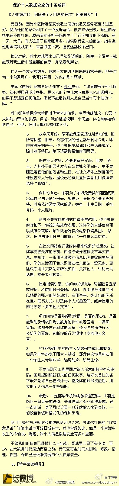

相信人，也会有防范意识和措施的。[呵呵]//@Sunny家的贡波措-海地车:佩服你的勇气。一般不会选择沙发和被沙发，觉得一个不知根知底的人住到自己家还是有点不放心，即使TA的沙发评价挺高@Ada李力:刚和入住我家的沙发客Didier一起吃玩晚饭。他是法国人，会英法德三种语言，26岁，硕士毕业后，工作两年后攒些钱后就辞职开始了环球旅行，想找到自己的下一个领域或者工作，反正是不想再做原来的电子行业，也不想回到法国。我年轻时不知道有这种生活方式，现在是知道也只能欣赏而不能去体验了。
为了锤子科技提供的手机发布会门票，提供了将近十个手机号码，还不一定是否拿到票，似乎有些蠢了。@CSDN李涛@丁辰灵:【大数据时代保护个人数据安全的十条戒律】你可以不网购，你也可以不上社交网站，不用QQ，但你能控制住自己的欲望吗？为了几毛钱的赠品，就拱手将自己的电话号码赠送给别人了。我现在的做法是可以留地址，但是绝对不具体到楼号和门号。此文为博友@数字营销视界 根据自己亲身经历整理一篇文章。值得一读 